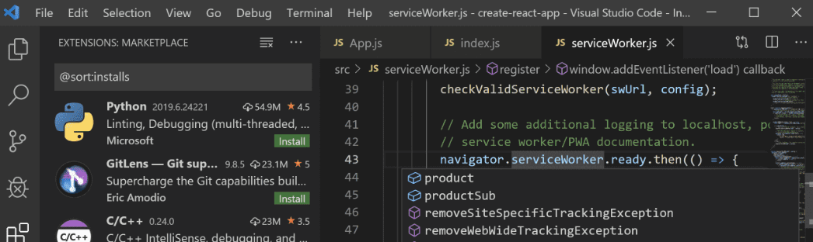

这篇文章上次修改于 1013 天前，可能其部分内容已经发生变化，如有疑问可询问作者。

Windows Subsystem for Linux (WSL) 就是 Windows 10 下安装的 Linux 子系统，有了它可以很方便的使用 Linux，WSL 也可以很方便的访问本地磁盘文件。
vs code 已经成为目前个平台最流行的代码编辑平台，也是我最常用的编辑器，通过插件设置，可以在 WSL 环境下使用 vs code，这对于环境开发和编辑工作有极大的帮助，下面介绍设置方法。
相关链接：
- Windows 10 上使安装 WSL：https://niekun.net/index.php/archives/1148.html
- 在 Windows 和 WSL 中共享 Git 证书：https://niekun.net/index.php/archives/1159.html
- 在 Git 中缓存 GitHub 密码信息：https://niekun.net/index.php/archives/444.html
安装 remote-WSL 插件
在 vs code 插件管理搜索并安装 remote-WSL，安装后可能需要重新打开 vs code：
以 WSL 打开新窗口
在 vs code 中按 F1 打开命令控制器，输入 remote-WSL:new window：
也可以点击左下角绿色图标，也会弹出相关的命令：
点击 remote-WSL:new window 后会打开新窗口，左下角图标就会显示当前是在 WSL 系统下：
现在就可以进行下面的开发工作了，可以新建一个终端：
可以看到已经在 Linux 环境下了。
想要打开文件或文件夹，直接从菜单中选择 file - open folder/file，首次会显示 WSL 用户根目录，根据导航选择到需要的文件/文件夹：
我为了方便操作磁盘文件，将 Windows 用户目录 link 到了 WSL 用户目录：
ln -s /mnt/c/users/YOURNAME ~/windows10
其它
对于 WSL 下使用 git 共享 Windows 证书，从而不用输入账户密码，可以参考我的文章：https://niekun.net/index.php/archives/1159.html
首次使用 git 可能会提示要定义 user.name 等信息，设置命令如下；
git config --global user.email "[email protected]"
git config --global user.name "Your Name"
git config --global push.default simple
没有评论